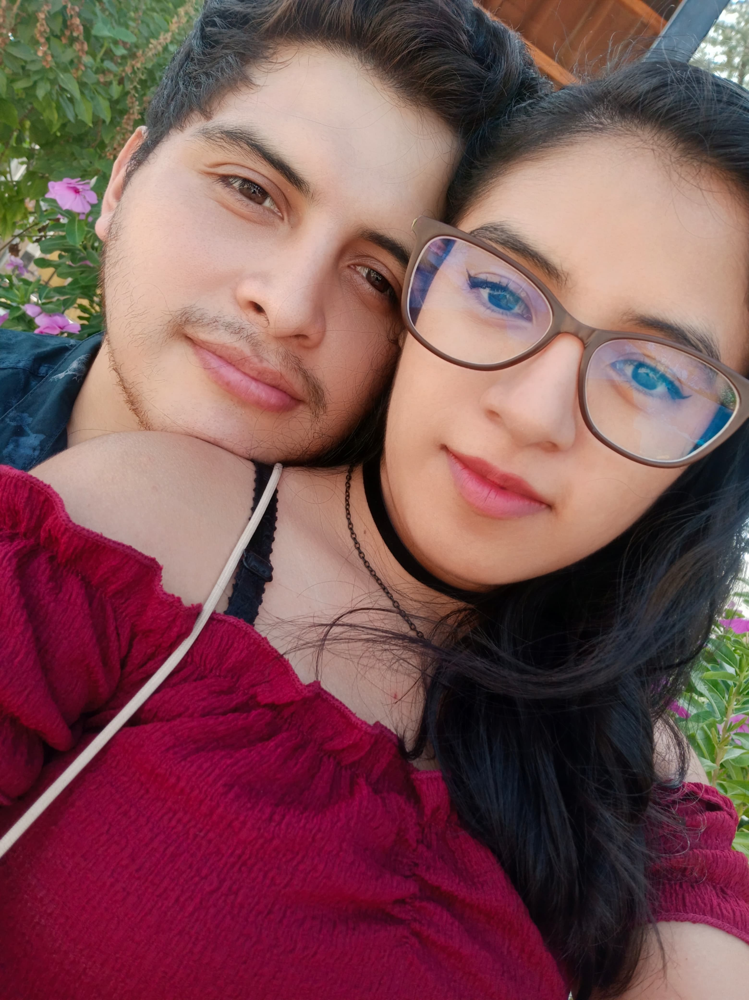
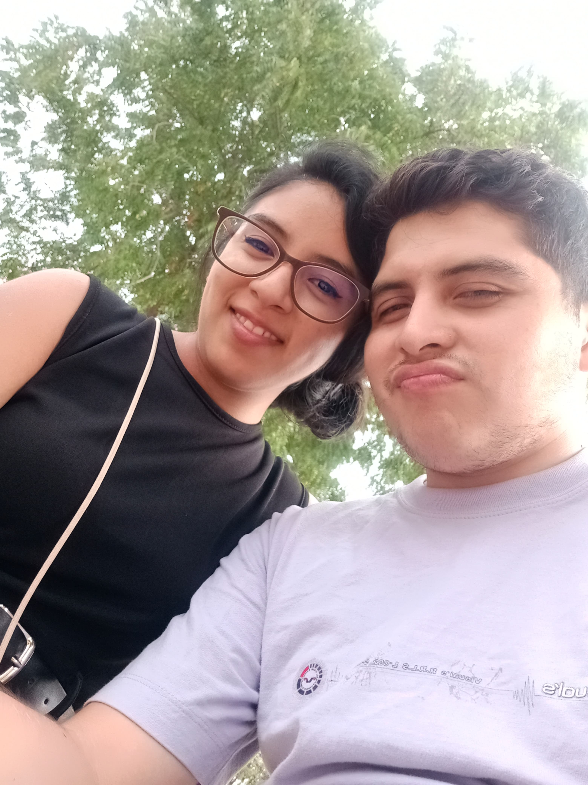
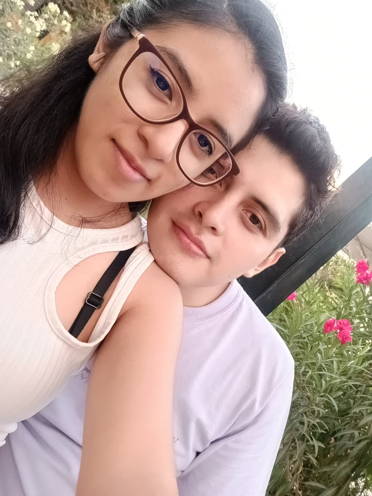

(Toca cada foto para descubrirlo ✨)

"No es fácil encontrar las palabras correctas cuando uno sabe que falló gravemente, pero no quiero esconderme. Te escribo para pedirte perdón por todo el daño que te he hecho. Sé que mis acciones te lastimaron y que mis mentiras quebrantaron la confianza que con tanto amor construiste para mí. No debí hacer eso nunca. No debí poner en riesgo nuestra relación ni tu tranquilidad por decisiones egoístas. Sé que el perdón no es automático y que las palabras se las lleva el viento si no van acompañadas de un cambio real, el cual estoy dispuesto a demostrarte. Respeto el tiempo y el espacio que necesites para procesar esto, pero no quería dejar pasar más tiempo sin decirte lo mucho que lo lamento."

"he estado pensando en todo lo que pasamos y quería decirte que ya acepté las cosas. Sé que dolió, pero entendí que los dos somos humanos, nos equivocamos en nuestras decisiones y nos dejamos llevar en su momento. Lo importante es que decidimos no tirar todo a la basura."

"Quiero que dejemos todo lo atrás y sigamos adelante juntos. Si te soy sincero, tuve muchísimo miedo de perderte, se me caía el mundo encima de solo pensarlo, y ese miedo me hizo reaccionar y darme cuenta de lo que de verdad importa. Todo esto me sirvió para aterrizar y comprometerme a mejorar como persona. Voy a cambiar lo que tenga que cambiar, porque mi prioridad eres tú y que estemos bien y en paz. Quiero seguir a tu lado pase lo que pase, porque tengo clarísimo que eres la mujer con la que soñé para toda la vida y eres el amor de mi vida. No tengo ni una sola duda de que lo nuestro vale la pena y te lo voy a demostrar cada día."